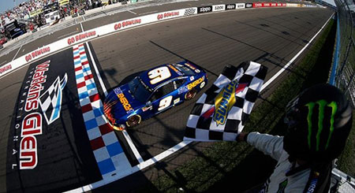

Wins
1. Watkins Glen 2018

Chase Elliott scored his first Victory at Watkins Glen in upstate New York. In his third season in the cup series, Elliott held off one of the sport's best in Martin Truex Jr. to secure his first win. Truex tailed Elliott lap after lap, however, Elliott was able to hold him off as Truex ran out of fuel on the last lap. Elliott finally captured his first win and then ran out of gas on the cool down lap. This allowed for a legendary moment where Jimmie Johnson pushed Chase Eliott back to the start/finish line in order to celebrate in front of his many fans.